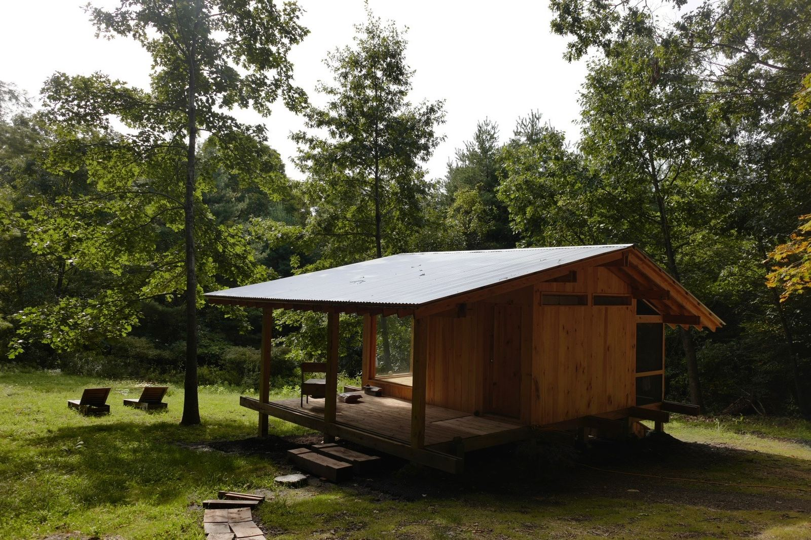
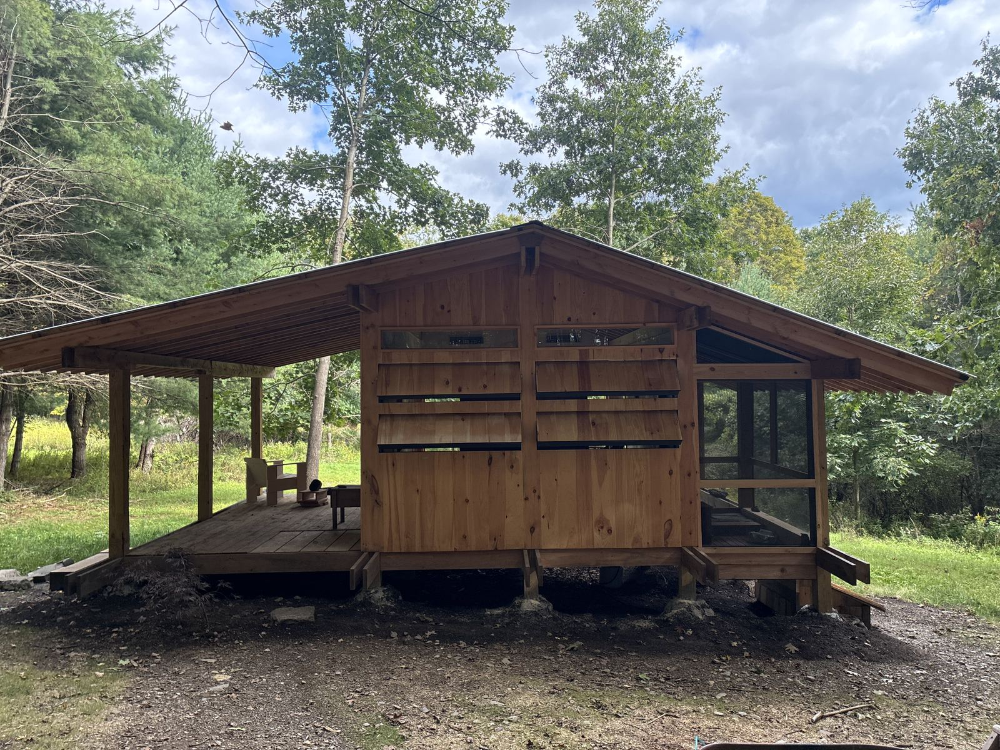
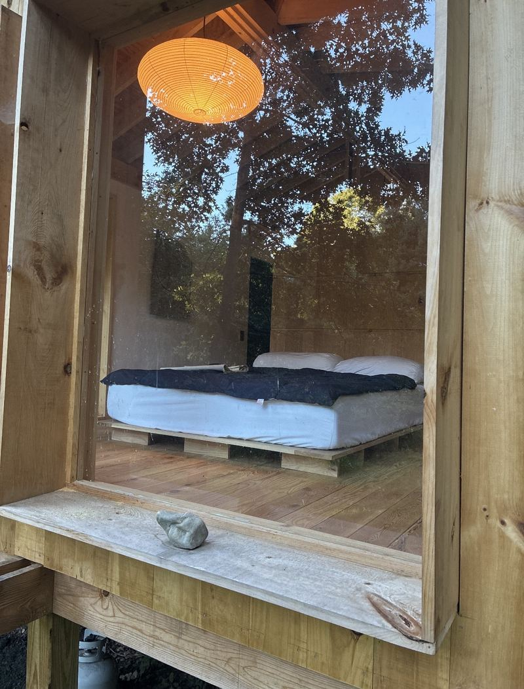
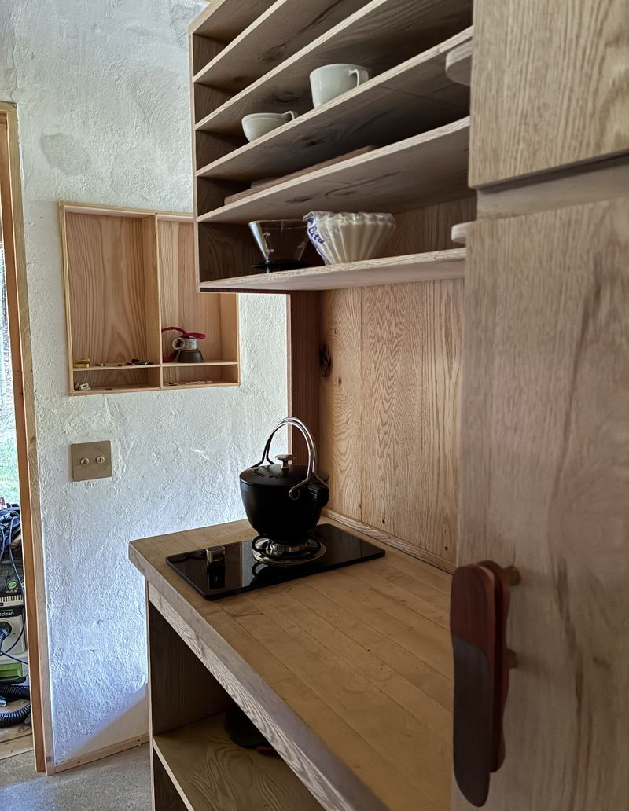
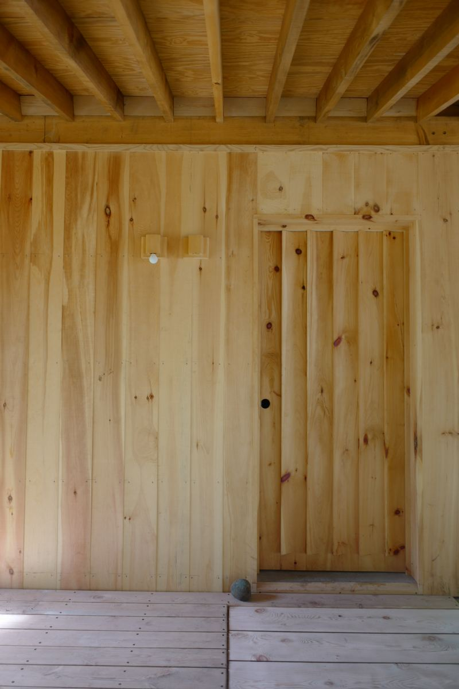
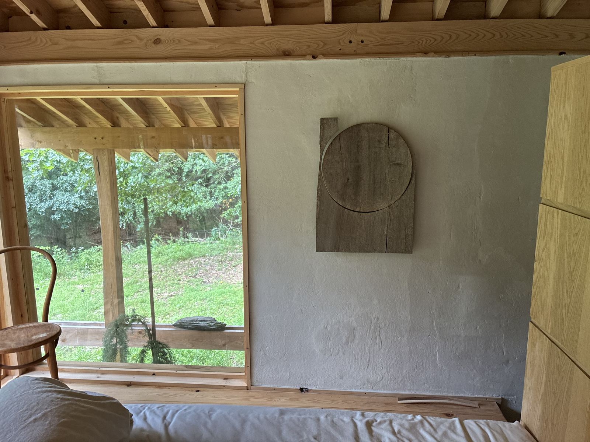
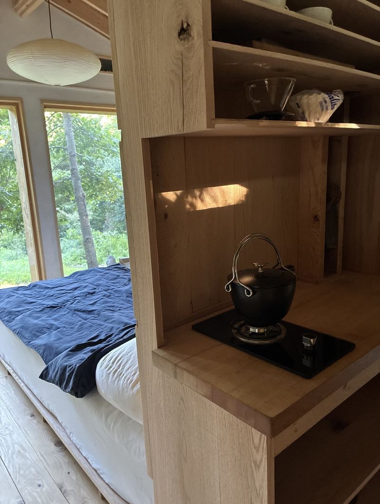
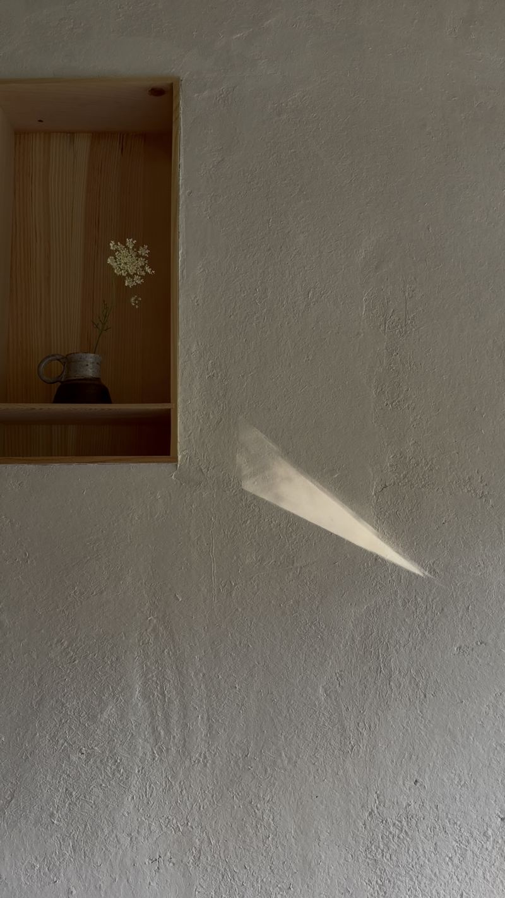

- SleepingOne bed, linens provided
- KitchenSingle-burner stove, kettle, pour-over
- BathingCamp shower
- ToiletComposting
- PowerOff grid
- OutsideCovered porch, screened room, clearing
Chatham, New York — 42.4° N
Less house.
More woods.
Broken Branch Cottage is a one-room timber studio in a clearing in Columbia County. Off grid, under a tin roof, between the Hudson Valley and the Berkshires.


- Layout
- Studio
- Sleeps
- 2
- Power
- Off grid
- To Chatham
- 10 min
The cottage
One room of pine, oak and lime plaster. A bed beneath a paper lantern, a big window onto the trees, a kitchen built into the cabinetry, and a covered porch for mornings.
The walls are hand-plastered; the shelves are solid oak. Nothing extra.




Off grid, on purpose
Broken Branch isn't connected to the grid. There's a camp shower and a composting toilet, a stove with one burner and a kettle that sings on it.
It's simple by design: come to read, sleep, walk the woods, and notice the light move across the wall.


The place
The Town of Chatham, in Columbia County — farm stands, back roads and small villages, a short drive from both the Hudson River and the Berkshires.
Exact address shared with guests after booking.
Driving times
- Chatham village
- 10 min
- Kinderhook
- 25 min
- Tanglewood, Lenox
- 35 min
- Hudson & Amtrak
- 40 min
- Albany–Rensselaer Amtrak
- 40 min
- Great Barrington
- 45 min
- New York City
- 3 hr